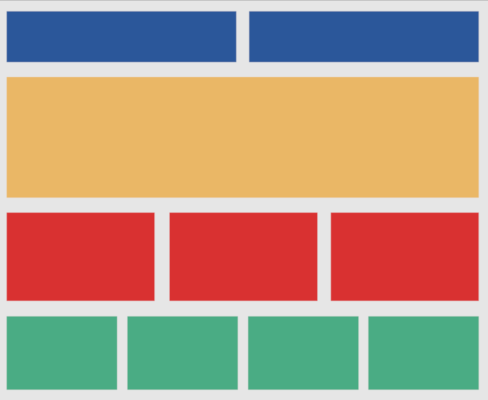
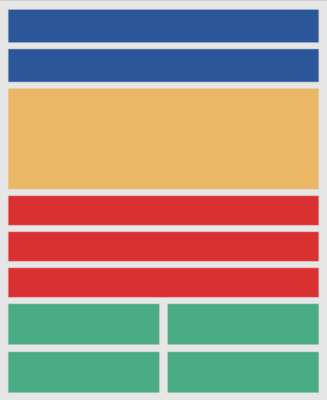
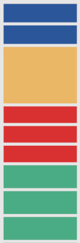
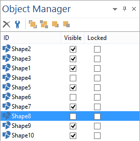

Introduction to Responsive Web Design - The Basics
This tutorial will give a quick introduction to Responsive Web Design. At the end of this tutorial there is also a video introduction.
The idea behind Responsive Web Design is that when a user visits your website, they will get best view for their device based on the screen size. This is achieved by providing different layouts for specific device widths. These different layouts are called 'breakpoints' or 'variations'.
All layouts are part of the same page and use (mostly) same objects.
The great thing about Responsive Web Design in WYSIWYG Web Builder is that you have full control over the layout in different breakpoints unlike in other tools where you are force to use predefined layouts/templates.
Here's an example of a basic layout:
This tutorial will give a quick introduction to Responsive Web Design. At the end of this tutorial there is also a video introduction.
The idea behind Responsive Web Design is that when a user visits your website, they will get best view for their device based on the screen size. This is achieved by providing different layouts for specific device widths. These different layouts are called 'breakpoints' or 'variations'.
All layouts are part of the same page and use (mostly) same objects.
The great thing about Responsive Web Design in WYSIWYG Web Builder is that you have full control over the layout in different breakpoints unlike in other tools where you are force to use predefined layouts/templates.
Here's an example of a basic layout:
It's important to note that the contents and styling of objects will be the same in all breakpoints because it's the same object that is shared between multiple views. Also note that not all objects can be resized, some objects are 'not responsive'. This means that they will have the same size in all breakpoints. See the FAQ for more details about this: http://wysiwygwebbuilder.com/forum/viewtopic.php?f=10&t=63817
It is also possible to add objects that are only visible in one specific breakpoint and hide them in other breakpoints.
This can be useful for navigation objects because some navigation objects work better on desktop computers and others on touch screens.
For example you display a menubar on the desktop version and panel menu to the breakpoints for smaller screen.
You can use the Object Manager to show or hide objects. The visibility can be different for each breakpoint.
It is also possible to add objects that are only visible in one specific breakpoint and hide them in other breakpoints.
This can be useful for navigation objects because some navigation objects work better on desktop computers and others on touch screens.
For example you display a menubar on the desktop version and panel menu to the breakpoints for smaller screen.
You can use the Object Manager to show or hide objects. The visibility can be different for each breakpoint.
The quickest way is to use the breakpoint toolbar at the bottom of the screen:
On a tablet (with a smaller screen) there is less space so the boxes will be harder to read without zooming (if they had text). So let's add a breakpoint for 768 pixels screens and rearrange the boxes. Note that the same objects were used, only their position and size was changed!
For more details about Responsive Web Design please read these related tutorial and FAQ:
Responsive Web Design in WYSIWYG Web Builder
Responsive Web Design - Tools
Responsive Web Design FAQ (must read!)
Responsive Web Design in WYSIWYG Web Builder
Responsive Web Design - Tools
Responsive Web Design FAQ (must read!)

On a mobile phone there is even less space, so here we place all boxes in a single column. Again they are the same objects, only with a different position and size.



This toolbar can also be used to switch between breakpoints or go back to the default view.
When creating new breakpoint, Web Builder will make a copy of the default view. So the page will initially look identical to the desktop view.
But the idea is to rearrange the items so the layout looks better for this screen size.
When creating new breakpoint, Web Builder will make a copy of the default view. So the page will initially look identical to the desktop view.
But the idea is to rearrange the items so the layout looks better for this screen size.
Tip:
Do not change too much at one time! To get an idea how Responsive Web Design works, start with just moving one object at a time and see how that affects the layout. If you change too many things at once then you may lose the overview of what you have done and it will be difficult to go back if something goes wrong.
Do not change too much at one time! To get an idea how Responsive Web Design works, start with just moving one object at a time and see how that affects the layout. If you change too many things at once then you may lose the overview of what you have done and it will be difficult to go back if something goes wrong.
After you have rearranged the objects click 'Preview in browser' to see how the page with breakpoints behaves in the browser.
Initially the browser will display the default (desktop) view but if you resize the browser window and make it smaller then 768 pixels then you will notice that the layout will adapt to the current browser size!
Demo:
https://www.wysiwygwebbuilder.tk/support/rwd_demo.html
You can download the demo project here:
https://www.wysiwygwebbuilder.tk/support/rwd_demo.zip
Here's a great video tutorial about Responsive Web Design created by Greg Hughes:
Initially the browser will display the default (desktop) view but if you resize the browser window and make it smaller then 768 pixels then you will notice that the layout will adapt to the current browser size!
Demo:
https://www.wysiwygwebbuilder.tk/support/rwd_demo.html
You can download the demo project here:
https://www.wysiwygwebbuilder.tk/support/rwd_demo.zip
Here's a great video tutorial about Responsive Web Design created by Greg Hughes: